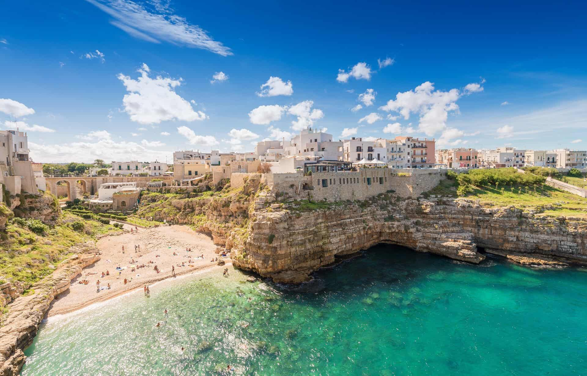
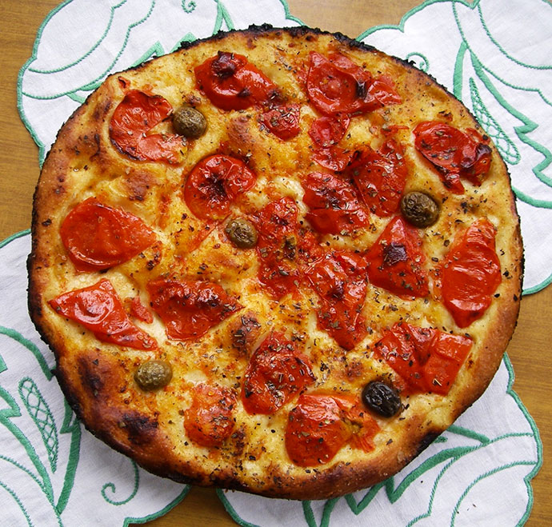
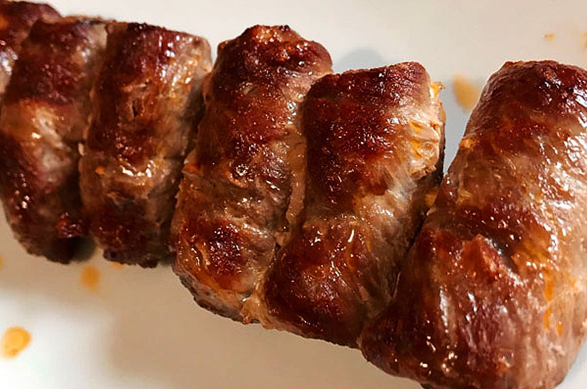

PUGLIA

Puglia-Semplicità che conquista
La cucina pugliese è un perfetto equilibrio tra terra e mare, fatta di ingredienti poveri ma ricchi di sapore.
Protagonisti assoluti sono l’olio extravergine d’oliva, le verdure di stagione, il grano duro e il pesce fresco.
Piatti come le orecchiette con le cime di rapa, la focaccia barese e le bombette raccontano una tradizione contadina e autentica,
dove ogni ricetta parla di famiglia, territorio e stagioni.
SPECIALITA'

ORECCHIETTE CON LE CIME DI RAPA
Descrizione:
Simbolo della cucina pugliese, le orecchiette sono una pasta fresca dalla tipica forma concava, ideale per raccogliere il condimento.
Vengono servite con cime di rapa saltate in padella con aglio, olio extravergine d'oliva, filetti di acciughe e peperoncino.
Il contrasto tra l'amaro delle verdure e la sapidità delle acciughe crea un sapore deciso e inconfondibile.
Curiosità:
La preparazione delle orecchiette è un rito tramandato da generazioni, spesso realizzato a mano dalle donne nei vicoli dei centri storici, in particolare a Bari vecchia, dove è possibile vederle all’opera lungo le strade.

FOCACCIA BARESE
Descrizione:
La focaccia barese è una specialità da forno amata in tutta la Puglia.
L’impasto, a base di semola di grano duro, patate lesse e olio d’oliva, risulta soffice all’interno e croccante fuori.
Viene tradizionalmente condita con pomodorini, olive nere e origano, e cotta in teglie unte, che le conferiscono il tipico bordo dorato e saporito.
Curiosità:
Secondo la tradizione, la focaccia veniva preparata e venduta nei forni mentre si attendeva la cottura del pane: un gustoso “antipasto” da portare a casa.

BOMBETTE PUGLIESI
Descrizione:
Le bombette sono piccoli involtini di carne di maiale (generalmente capocollo) farciti con formaggio filante, spezie e, a volte, pancetta o salumi.
Vengono infilzati su spiedini e cotti alla brace, sprigionando un profumo irresistibile. Sono tipiche della zona della Valle d’Itria,
soprattutto nei comuni di Cisternino, Martina Franca e Locorotondo.
Curiosità:
Il nome "bombette" deriva dal fatto che “esplodono di gusto” al primo morso. Molte macellerie della zona sono anche “fornelli pronti”: scelti i pezzi, vengono cotti sul momento e serviti caldi.
CARTA DEI VINI
PRIMITIVO DI MANDURIA
Descrizione:
Il Primitivo di Manduria è un vino rosso corposo e intenso, tipico della provincia di Taranto, nel cuore della Puglia.
Caratterizzato da un bouquet ricco e avvolgente, sprigiona profumi di frutti neri maturi, confettura, e note calde di cioccolato e spezie.
Al palato è morbido, caldo e con un buon grado alcolico, che lo rende un vino potente ma equilibrato.